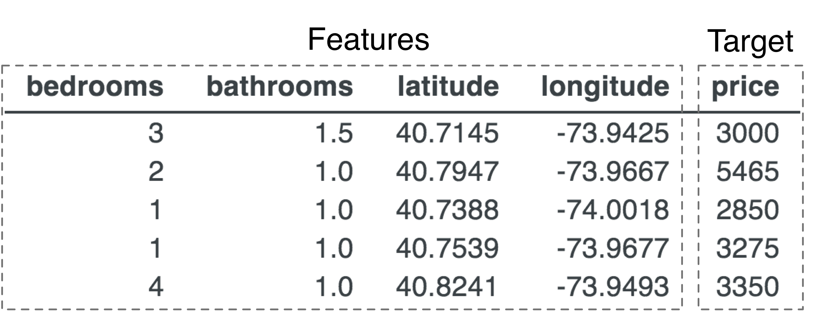
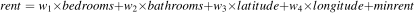

.) The technique has been around for over 200 years and mathematicians have an elegant formula to conjure up suitable wi weights.
.) The technique has been around for over 200 years and mathematicians have an elegant formula to conjure up suitable wi weights.Terence Parr and Jeremy Howard
Copyright © 2018 Terence Parr. All rights reserved.
Please don't replicate on web or redistribute in any way.
This book generated from markup+markdown+python+latex source with Bookish.
Please send comments, suggestions, or fixes to Terence.
Contents
“Without data you're just another person with an opinion” — W. Edwards Deming
In densely-populated cities, such as San Francisco and New York, everyone's favorite topic is the cost of housing. There's nothing quite as invigorating as writing a check for US$4200/month to rent a single bedroom apartment (as renters do down the street from Terence's place in San Francisco's Mission District). People are always comparing rent prices because they want to know if they're overpaying or getting a good deal. The idea is to collect information on similar apartments and then compare prices. Real estate agents tend to have more data and are, hopefully, able to provide more accurate rent estimates.
1A nice alliteration by Navid Amini https://scholar.google.com/citations?user=tZTnipEAAAAJ
The problem, of course, is that large amounts of data quickly overwhelm the human mind and so we turn to computers for help. Unfortunately, basic statistics aren't sufficient to handle interesting problems like apartment rent prediction. Instead, we need machine learning to discover relationships and patterns in data, which is the subject of this book. Simply put, machine learning turns experience into expertise,1 generalizing from training data to make accurate predictions or classifications in new situations (for previously unseen data).
In this first chapter, our goal is to show just how easy it is apply machine learning to get excellent rent price predictions from an idealized New York City rent data set (derived from a Kaggle competition). Along the way, we'll define a number of important terms and concepts commonly used by machine learning practitioners and give a general overview of the machine learning process. For the Python code snippets in this chapter, feel free to just cut-and-paste them blindly and don't sweat the details. In the next chapter, [tour], we're going to solve the same problem but in more detail and using the original data set, which needs to be cleaned up. We'll also recommend a work environment and give the key libraries a workout as we demonstrate the mechanics of machine learning.
Instead of leaping immediately to our recommended solution, let's try to invent a technique for predicting apartment rent prices in New York City. It'll highlight the difficulty of the problem and help us understand the machine learning approach. Without understanding the underlying algorithms, we can't successfully apply machine learning. We must be able to choose the right algorithm for a particular problem and be able to properly prepare data for that algorithm. By starting simply and going down a few dead ends, we'll also motivate the construction of more sophisticated techniques.
First, we have to clearly define the problem. Given four attributes of an apartment, the number of bedrooms, the number of bathrooms, and location (longitude, latitude) we want to predict (determine) the price. Those apartment attributes are called features and the price is called the target. We're usually given data in the form of a table like the following (see file data/rent-ideal.csv).

This data is called training data or the training set because we, or a program, must learn from this “experience” in order to make predictions. (It's often convenient to treat all of the features for a single record as a single feature vector called X and to call the target scalar y; a vector is a list of numbers.)
The central problem of machine learning is to build a system that is accurate without being overly-specific to this training data (assuming the data has an underlying relationship to capture).
It's easy to build a system that makes accurate predictions for items in the training set. All we have to do is memorize the apartments and their prices (in this context) then look up the price for an apartment in the training data when asked to do so. At the other extreme, we could compute the average rent across all apartments and predict that price for any apartment look up, inside or outside of the training data. The overall average rent would not be super accurate for a specific apartment, but it would give a ballpark figure, easily distinguishing rent from, say, a hot pastrami sandwich at Katz's delicatessen on E. Houston Street ($21.45).
Memorization doesn't generalize beyond the training data but is precise. Blurring all apartments together obviously yields a prediction for any apartment we present but is not precise at all. Somewhere in between lies effective machine learning. Let's start with just memorizing the training data and work our way towards a system that properly generalizes.
Given the training data, we can reasonably predict a price of $5,465 for an apartment with two bedrooms and one bathroom at location coordinates 40.7947,-73.9667 because that comes straight from the second row of the table. To get perfect accuracy, we can interpret the learning process conceptually as just filling up a dictionary that maps a four-element key to a single value (price), something like this:
In the vocabulary of machine learning, we are “training a model,” where the model here is a dictionary data structure. Training in this case simply means to remember all apartment data with perfect recall.
But this training process assumes that all apartment records are unique, which is not a valid assumption. For example, here are four studio apartments with the same (bedrooms, bathrooms, latitude, longitude) feature vector but different (eye-popping!) prices:
Having multiple prices for the same feature vector represents an uncertainty. Which of the four prices should the model return? There's likely a good reason for the difference in prices, such as view or square footage, but we don't have that data. Or, as we'll see in the next chapter, data is sometimes noisy or just plain wrong. Either way, we need to deal with this uncertainty because repeated keys cause our rudimentary training process to overwrite previous prices.
Because our goal is to generalize, giving a good estimate for apartments not in our training data, we should aim for the expected rent value considering all apartments in the city with the same attributes. Another term for expected value is “average” so let's just record the average, which is what a human expert would do implicitly. In this case, we'd record an average price ($2,825) and yield that value when asked to predict the price of an apartment with those features. The more sample prices in our training data we have for a particular set of apartment attributes, the better the estimate of the true average price we'd get. This works well and is actually a kind of lossy compression because we have merged records, at the cost of less specific predictions.
Aggregating records for identical apartment feature vectors and recording their average rent dips a toe into the as-yet murky waters of machine learning. We are creating an aggregate price for a prototypical apartment of a particular type, in a sense learning what the price should be or is expected to be for that type of apartment. This gives us a hint that machine learning is a just a sensible combination of data structures, algorithms, and statistics. As we continue, hopefully you'll see that machine learning is not some mysterious and arcane mechanism that takes forever to learn.
The problem with the rudimentary dictionary model is that it's super rigid in that it can't deal with uncertainty in the apartment feature vectors themselves. (Previously-unseen apartment feature combination raise a “key error” during look up.) How should we predict the price of an apartment whose features don't exactly match an entry in the training data?
An interesting solution is to keep the original training data as-is and then scan for the apartment record whose features most closely match the features of the apartment for which we'd like a price. As before, there could be multiple prices for that closest matching record and so we'd want to average those prices to yield the prediction. Believe it or not, such a simple model is very powerful (for appropriate data sets) and is variation on the nearest neighbor predictor, which we'll study in detail later ([kNN]).
The only problem with the nearest neighbor model is performance. We have to keep the entire training data set around as the model and we have to linearly scan all of the records looking for the closest match for an apartment feature vector. In contrast to the dictionary model, there is no training process, but apartment lookup (prediction) is very slow.
Another way to handle uncertainty in the apartment features, is to merge records as we did before. We can group apartment records by a combination of bedrooms and bathrooms and compute the average price for each group. This approach works in this case because there are only so many combinations of numbers of bedrooms and bathrooms; we can cover them all. For example, here are the first few average prices per bedrooms/bathrooms combination:
(You gotta like New York City and its quirky apartments; apparently you can rent places with no bedroom but 4 bathrooms for an average of $7995/month!)
At the cost of specificity, merging dramatically reduces the size of the data set, from 48,266 records down to 51 records for this data set. A dictionary or linear scan could quickly find the bedrooms/bathrooms combination to make a prediction. Of course, this approach completely ignores location, which we know to be important. The group averages are hiding a lot of variability between apartments. We could make a secondary index that grouped apartments by latitude/longitude to get a second estimate based solely on the location. But it's unclear how we would merge the two rent estimates into a single prediction. Such an ad hoc approach sometimes works but requires a lot of thought and is highly dependent upon the data set. We need a more systematic approach.
We could try a “mathy” approach where we weight each feature by how important it is then use a weighted sum to estimate rent prices:

This equation boils all of our rent training data down to just four numbers, wi, which comprise our model. (That's an amazing compression!) Better yet, making a prediction is superfast because it's just four multiplies and four additions.
This approach often works well and is called a linear model or linear regression because it tries to draw a line (or plane when given more than two dimensions) through the training data. (Recall the formula for a line from high school algebra, .) The technique has been around for over 200 years and mathematicians have an elegant formula to conjure up suitable wi weights.
For this data set, unfortunately, a linear model is not a good choice because such models treat every feature as a single trend with lower rent on one side and higher rent on the other, or vice versa. For example, it's reasonable to assume that rent prices would go up as the number of bathrooms goes up, but the data doesn't support that conclusion. Figure 1 shows the average rent for all apartments with the same number of bathrooms with dots where we actually have data.
The “best fit,” red line minimizes the difference between the line and the actual average price but is clearly a terrible predictor of price. In this case, there is something weird going on beyond 4 bathrooms. (10 bathrooms and only $3500/month? One can only imagine what those places look like.) Consequently, a single line is a poor fit and does not capture jagged relationships like this very well.
A more sophisticated approach would treat different ranges of a feature's values separately, giving a different rent estimate per range. Each feature range would have a different prototypical apartment. But, we have to be careful not to create a model that is too specific to the training data because it won't generalize well. We don't want to go lurching back to the other extreme towards a dictionary model that memorizes exact apartment feature vector to price relationships.
We want a model that gracefully throttles up, splitting a feature's values into as many ranges as necessary to get decent accuracy but without creating so many tight ranges it kills generality. To see how such a model might work, let's consider the rent prices for one-bath, one- and two-bedroom apartments in a very small rectangular region of New York:
An easy but tedious way to capture the relationship between the feature values and the associated price would be to define some rules in Python:
With enough coffee, we should be able to come up with the rules to carve up the feature space (4-dimensional space of all possible bedrooms, bathrooms, latitude, longitude combinations) into clusters. Ideally, each cluster would contain apartments with similar attributes and similar rent, as is the case for this subsample. To make a rent prediction, we'd execute the rules until we get a match for the apartment features of interest.
Unlike the dictionary model, these rules can handle previously unseen data. For example, imagine a one-bedroom, one-bathroom apartment at location 40.6612,-73.9800 that does not exist in the training data. The first rule applies and so the model would predict rent of $2,143. This model generalizes (at least somewhat) because it deals in ranges of feature values not exact feature values.
The size and number of feature value ranges used by the model represent a kind of an accuracy “knob.” Turning the knob one way increases generality but makes the model potentially less accurate. In the opposite direction, we can make the ranges tighter and the model more accurate, but we potentially lose generality. A model that is overly-specific to the training data and not general enough is said to overfit the training data. The opposite, naturally, is an underfit model that doesn't capture the relationships in the training data well, which also means that it won't generalize well.
Okay, now we have a model that is potentially accurate and general but prediction through sequential execution of numerous if-statements would be pretty slow. The trick to making prediction efficient is to factor and nest the rules so they share comparisons to avoid repeated testing:
Another way to encode those nested rules is with a tree data structure, where each node performs a comparison. Figure 2 is a visual representation of what such a tree might look like. Predicting rent using such a tree costs just four comparisons as we descend from root to the appropriate leaf, testing features as we go. The leaves of the tree contain the prices for all apartments fitting the criteria on the path from the root down to that leaf. Trees like this are called decision trees and, if we allow the same feature to be tested multiple times, decision trees can carve up feature spaces into arbitrarily tight clusters.
The problem with decision trees is that they tend to get too specific; they overfit training data. For example, we could build a decision tree that carved up the feature space so that each leaf corresponded to a single apartment. That'd provide precise answers but, as with our rudimentary dictionary model, such a specific tree would not generalize.
To prevent overfitting, we can weaken the decision tree by reducing its accuracy in a very specific way: by training the tree on a random selection of the training data instead of all members of the data set. (Technically, we are bootstrapping, which randomly selects records but with replacement, meaning that a record can appear multiple times in the bootstrapped sample; [RF] explores this in detail.) Because not all elements from the original data set are present, we have a coarser view of the training data so the comparison ranges in our decision tree nodes will necessarily be broader.
To compensate for this weak learner, we can create lots of them and take the average of their individual predictions to make an overall rent prediction. We call this ensemble learning and it's an excellent general technique to increase accuracy without such a strong tendency to overfit {TODO: is true?}. To reduce overfitting even further, we can add a bit more randomness in terms of how we select features to compare at each decision tree node.
Introducing more randomness gives us a Random Forest(tm), which we recommend as your model of choice for the majority of machine learning problems encountered in practice. We'll learn exactly how random forests work in [RF] and establish why that model is the Swiss Army Knife (tm) of the machine learning world. A random forest behaves very much like a real estate agent that looks for “comps”, comparable units, to estimate prices. Both are carving up the feature space, aggregating units to form prototypical apartments and their expected prices.
Now that we've peeked behind the curtain to get an idea of how machine learning algorithms learn from training data, let's train a random forest on our apartment data to see how well it can predict rent prices.
Ok, we've got some idea of what's going on at a high level, so let's dig into the actual mechanics of applying machine learning to this real problem. You might be surprised at how little code it takes! Again, don't worry about the details, which we'll go over again in the next chapter anyway. The main take away should be the basic process and some idea of what machine learning code looks like. We're going to train and compare multiple random forest predictors, test models appropriately, and learn something about the rental market from the models. (Hint: New Yorkers apparently really care about bathrooms.) Before we get started, let's make sure that we all have the same version of Python 3 and the necessary libraries.
Because we assume you know how to program in Python, we assume your machine is set up reasonably to edit and execute Python code. We need to make sure, however, that all of the machine learning libraries we need are installed and that Python 3 is the default on your systems. The easiest way is to download and install Anaconda2 for Python 3.
3During installation on Windows, make sure to check the box that adds Python to your PATH environment variable, for which you will need administrator privileges.
Download and install the Python 3.6 or higher version of Anaconda using the “64-bit graphical installer.” 3 Use the “just for me” option so that the installer puts Anaconda in your home directory so we all have it in the same spot: C:\Users\YOURID\Anaconda3 on Windows and /Users/YOURID/anaconda3 on Mac (similar on any UNIX machine). The libraries are big and so you'll need 2.4G of disk space. To verify everything is installed properly, you should try to import a library, as Terence demonstrates here on his computer from the Mac (UNIX) command line:
On windows, you can start the Python 3 interpreter from the PowerShell (if python is in your PATH) or via the “anaconda prompt” launched from the start menu:
If you get the >>> prompt back and don't get any errors, you are good to go!
We will also need a package called rfpimp that gives us a reliable way to compare the predictive value of the various apartment features:
The first step in the machine learning process is to load our training data, rent-ideal.csv from this book's data directory, which we'll do with the help of your new BFF (best friend forever) Pandas. Once we import the Pandas library, giving it the standard short alias pd, we can call function read_csv() to open a file of comma-separated value records (one apartment record per line and with a header row with column names):
The result stored into variable rent is called a data frame and works like a spreadsheet or a database table, with rows and named columns. Here's how to print out the first five records:
bedrooms bathrooms latitude longitude price 0 3 1.5 40.7145 -73.9425 3000 1 2 1.0 40.7947 -73.9667 5465 2 1 1.0 40.7388 -74.0018 2850 3 1 1.0 40.7539 -73.9677 3275 4 4 1.0 40.8241 -73.9493 3350
You can literally just cut-and-paste those three lines into a Python file and run the file to get that output, assuming you give read_csv() the correct path to the data file. All of the code snippets in this section are pieces of the same large script.
Once we have a data frame, we can ask it all sorts of questions. For example, we can pull out the price column using rent['price'] and then ask for the average (mean) rent:
Average rent is $3439
Just like spreadsheet pivot tables or the database group by operator, we can do some pretty fancy data aggregation with Pandas. The following code groups the training data by the number of bathrooms and computes the mean price (actually mean of all of the other columns too):
bathrooms price 0 0.0 3144.870000 1 1.0 3028.111035 2 1.5 4226.336449 3 2.0 5278.595739 4 2.5 6869.047368 5 3.0 6897.974576 6 3.5 7635.357143 7 4.0 7422.888889 8 4.5 2050.000000 9 10.0 3600.000000
Pandas also has excellent graphing facilities, courtesy of your next best friend, a sophisticated plotting library called matplotlib. Here's how to plot the price against the number of bathrooms:
To train a model, we split the data frame into the feature columns (the predictors) and the target (predicted) column, which practitioners typically call variables X and y. Let's train a model that just considers the number of bathrooms for prediction purposes. Here's how to extract the appropriate feature vectors and target column:
Variable X is a data frame (list of columns) with the bathrooms column whereas y is the price column:
<class 'pandas.core.frame.DataFrame'> <class 'pandas.core.series.Series'>
4The surface area of the Python libraries for machine learning is vast and it's difficult to tell where one library stops and the other starts, because they are so intertwined.
The random forest implementation we're going to use is from yet another awesome library called scikit-learn.4 In particular, we'll use class RandomForestRegressor where regressor is another (poorly chosen) term for predictor that statisticians like to use. Here is the simple incantation that trains a random forest on our apartment rent data:
To actually make a prediction, we call predict() with a list of one or more feature vectors. Because we trained our model with just one feature, making a prediction for a single feature vector looks a bit strange: rf.predict([[0]]). The [[0]] Python expression is a list with one element that is also a list, whose first element is 0. Here's how to ask the model to predict prices for apartments with zero or one bathrooms:
[3192.9854511 3029.04054858]
Those predictions seem a bit off because it appears an apartment with no bathroom is slightly more expensive than an apartment with one bathroom, but that's exactly what the training data shows in the scatterplot above. The model has captures the underlying bathrooms versus price relationship in the training data well.
Once we've trained a model, we have to test it, just like we do with software before deployment. There are two things to test. First, we verify that the model fits the training data well, meaning that the model captures the relationship in the training data between feature vectors and the targets. In this case, we assume there is a relationship between the number of bathrooms and the rent so we'd like to know how well the model captures that relationship. Second, we verify that the model generalizes, yielding reasonable rent predictions for feature vectors not in the training set. We'll worry about generalization later, after we've built a stronger model.
To see how well the model fits the training data, we pass the feature vectors of the training data back into the model and compare the predictions to the known actual prices. At this point in our process, we don't care about generality. We're just checking that our model can reproduce the original training data with some degree of accuracy. If the model can't make accurate predictions for apartments it trained on, then there's no hope the model will generalize to previously-unseen apartments.
There are number of common error metrics that practitioners use, but in this case, measuring the average difference between predicted and actual prices is a good metric. In other words, we'll make a prediction for every apartment and subtract that from the actual price found in the training data (and take absolute value). The average of those differences is the average absolute error and scikit provides a ready-made function to compute that. Here's how to run the training data back into the model and print out how far off model is on average (and the percentage of the average that represents):
$808 average error; 23.49% error
That means a user of this model can expect the predicted price for an apartment in the training data to be off by about $808, which is not great but we're only using single predictor feature. Let's add some more features to the model to see if we can improve the average error.
Creating a good model is more about feature engineering than it is about choosing the right model. Feature engineering means acquiring or even synthesizing features that are strong predictors of the target. Synthesizing features means deriving new features from existing features or injecting features from other data sources. For example, we could synthesize the name of the neighborhood from the latitude and longitude in the apartment data. It doesn't matter how sophisticated our model is if we don't give it something useful to chew on. If there is no relationship to discover, because the features are not predictive, no machine learning model is going to give accurate predictions.
At this point, we've only used one of the four apartment attributes as features in our model, so the natural thing to do is to try adding another feature and see how it affects model accuracy on the training set. Let's add in the number of bedrooms to our feature set and retrain model:
We can also check how well this model fits the training data as we did before:
$722 average error; 21.00% error
That's an improvement in expected rent prediction error on the training set of 808-722 = $86, or around 10%. That gives us a hint that the number of bedrooms is not as predictive as the number of bathrooms; we'll see a more formal way to check that below.
They say that three most important property attributes in real estate are: location, location, location. Let's test that hypothesis with our rental data, using just the two columns associated with map location:
$523 average error; 15.22% error
Ok, now we're getting somewhere. The average prediction error on the training set has dropped to $525. You might compare the difference the 21% error for the model fit on bedrooms and bathrooms and this 15% error and think “it's only 6%.” It's better to think of this as the ratio 15/21 = 71% rather than the difference 21-15. The ratio says that our prediction error relative to the average rent price got 100-71 = 29% better (lower). That more accurately represents how much better location helps the model fit the training data.
Let's see what happens if we combine all four attributes into our feature vector and retrain the model:
$189 average error; 5.50% error
Great! The average error in the predicted price for an apartment in the training data is down to only $190. Alas, we shouldn't get too excited because all we've shown so far is that our model captures the relationships in the training data. We know nothing about the model's generality.
The true measure of model quality is its generality: how accurately it predicts prices for apartment feature vectors not found in the training data. Even a crappy model like a dictionary can memorize training data and spit back accurate prices for that same training data. To test for model generality, we need a validation strategy. This is a big, important topic and one that we'll revisit throughout the book. For now, let's look at the two most common validation strategies: hold out and k-fold cross validation.
We were given a single data set: the training data. If we train on that entire data set, how can we measure accuracy on data not in the training set? We don't have any other data to use for validation. The answer is to hold out, say, 20% of the training data, splitting the original data set into two: a smaller training set and a validation set. Validation set is data used only for generality testing of our model, not in training the model. Which 20% to hold out is sometimes nontrivial, but for the apartment data, a random subset is perfect.
Scikit has a built-in function to split data sets, so let's retrain our random forest model using 80% of the data and check the average price error using the 20% in the validation set this time:
$300 average error; 8.73% error
Comparing the average error $304 from the validation set and the $190 error on data from the training set, we see that the model performs about 1/3 better on the training data. This is as we'd expect because the training error is our “do not exceed speed.” (The training error is analogous to the score we'd get on a quiz for which we'd seen the answers beforehand.) We want the validation error to be as close to the training error as possible.
If you run that code multiple times, you'll notice that different runs get different validation errors because of the variability in selecting the validation subset. That's not a good characteristic, which brings us to our second and more stable validation strategy, k-fold cross validation.
The k-fold cross validation strategy repeats the hold out strategy k times and averages the k errors to get a final estimate of the validation error. The strategy breaks the original data set into k equally sized subsets then trains on  subsets, using the remaining subset as the validation set. For example, k=5 cross validation splits the data set into five subsets, trains on the first four subsets and tests with the last subset. Next it rotates, training on the second through the last subset and validating with the first subset. This is so common that scikit provides a built-in function to automatically re-train and validate our model, rf, using k subsets from our full data set, X and y:
subsets, using the remaining subset as the validation set. For example, k=5 cross validation splits the data set into five subsets, trains on the first four subsets and tests with the last subset. Next it rotates, training on the second through the last subset and validating with the first subset. This is so common that scikit provides a built-in function to automatically re-train and validate our model, rf, using k subsets from our full data set, X and y:
$307 average error +/-$15.64; 8.92% error
(This can take awhile on a lower-end machine; don't worry---it'll peg your CPU but finish in about 15 seconds or so.)
This $307 average error is much more stable and more accurate than the error computed using the holdout strategy. The +/-$17.18 covers the range of two standard deviations, which just means that about 95% of the time the actual error will be within $17.18 of $307.
We're going to use cross validation frequently in the code snippets below, so let's factor the code into a function:
Then we can call validate(rf) to validate our models.
Now that we have a decent and stable metric of model generality, we can use it to tweak model architecture in an effort to improve accuracy. The idea is to wiggle some aspect(s) of the model and see if the validation error goes up or down. For example, the number of trees in our forest affects accuracy and so let's increase the number of trees to 100 from the default of 10:
$300 average error +/-$14.69; 8.72% error
The number of trees, and any other aspect of the model that affects its architecture, statisticians call a hyper-parameter. (I think we programmers would call this a meta-parameter.) The elements inside the model like the trees themselves are called the model parameters. As another example, the four wi weights and minimum rent value from a linear model are the model parameters.
{TODO: why does RandomForestRegressor(criterion='mae', n_jobs=-1) take forever whereas criterion='mse', the default, take only a few seconds?!}
At the cost of a little more computing power, the accuracy of our model improves just a little, but every little bit helps.
Machine learning models do much more for us than make predictions. Depending on the model, we can learn quite a bit about the data itself. The idea is that models trained on different data sets will have different guts (parameters) inside. Instead of examining those individual parameters, however, we can learn much more by interrogating the model. For example, a key marketing question for real estate agents is “what do people care about in this market?” More generally, we'd like to know which features have the most predictive power.
To compute such feature importance, we can compare the validation errors from a model trained using all features and the same model trained with a single feature removed. This difference tells us something about the relative importance of that missing feature. If the validation error goes way up, we know that feature is important. But if the error stays about the same, we can conclude that feature, in isolation, has very little predictive power. Practitioners do this all the time with random forests, but this querying approach to feature importance applies to any model. (This brute force retraining method works and illustrates the idea, but it's more efficient to randomize a feature's column and retest rather than removing and retraining the model.) Here's how to print out feature importances with a little help from the rfpimp package:
The actual value of each feature importance is not that relevant; we care about the relative differences between the feature importances. It's easier to see their relative strengths if we get fancy and look at the importances visually:
From this, we can conclude that New Yorkers care the least about bathrooms because that feature has the least predictive power, by a small margin, over other features. This compares features in isolation, though, and so we don't have a true measure of location importance because location is broken into two features, latitude and longitude. Nonetheless, this graph gives us good information about the predictive power of the various features.
We pointed out earlier that achieving good model generality is more about the features than the model, but the model can still matter. Until you get more experience, though, picking a model is not something you should worry about. Just use a random forest because it will work in just about any common business application where the data sits nicely in a spreadsheet-like table.
To demonstrate that random forests do a good job and to show how easy it is to swap out a model for a different one, here's how to create and validate a linear model using the same data set:
$658 average error +/-$12.66; 19.14% error
Notice that only the code line that creates the model itself is different. All scikit regression models have the same interface, such as functions fit() and predict(). The linear model's validation error of 19.14% is more than twice as bad as the 8.72% for the random forest trained on the same features.
Another popular model, also based upon trees, is called gradient boosting. Here's how to swap in a gradient boosting predictor:
$518 average error +/-$7.17; 15.06% error
{TODO: indicate we would normally run a grid search over the hyper parameters}
The validation error of 15.06% is better but still about twice as bad as the random forest validation error. We could tweak the hyper parameters of these models to try to improve accuracy, but this gives us a ballpark idea of different models' accuracies for a specific data set.
That wraps up our quick tour applying machine learning to the apartment rent data set. We've gone over a lot in this chapter, so let's pull it all together now.
As a review, and as a reference for future use, let's pack the key concepts and terminology we've learned in this chapter into a few concentrated paragraphs.
Machine learning uses a model to capture the relationship between feature vectors and some target variables within a training data set. A feature vector is a set of features or attributes that characterize a particular object, such as the number of bedrooms, bathrooms, and location of an apartment. The target is either a scalar value like rent price, or it's an integer classification such as “creditworthy” or “it's not cancer.” Features and targets are presented to the model for training as abstract matrix X and vector y (Figure 3) where each row represents everything we know about a particular entity, such as an apartment.
If the target is a scalar value, we're building a predictor (also commonly called a regressor), as shown in Figure 4. If the target is a discrete category or class, we're building a classifier (Figure 5). We'll learn about classifiers in [foo], but a simple way to think about the difference between predictors and classifiers is illustrated in Figure 6 and Figure 7. Predictors are usually fitting curves to data and classifiers are drawing decision boundaries in between data points associated with the various categories. There is a tendency to think of predictors and classifiers as totally different problems with different solutions, but they are really the same core problem and most models have both predictor and classifier variants. In fact, the classifier variant is sometimes nothing more than the predictor variant with an additional function that clips, scales, or tweaks the predictor's output.
Machine learning tasks that have both feature vectors X and known targets y fall into the supervised learning category and are the focus of this book. Unsupervised learning tasks involve just X and the target variable is unknown; we say the data is unlabeled. The most common unsupervised task is called clustering that attempts to cluster similar data points together very much like Figure 7. In the supervised case, though, we know not only how many categories there are but we also know which records are associated with which category. The goal of clustering is to discover both the number of categories and assign records to categories. As we mentioned in Chapter 1 Welcome!, the vast majority of machine learning problems are supervised and, besides, unsupervised techniques are straightforward to learn after mastering supervised techniques.
A model is a combination of data structure, algorithm, and mathematics that captures the relationship described by a collection of (feature vector, target) pairs. The model records a condensation of the training data in its data structure, which can be anything from the unaltered training set (nearest neighbor model) to a set of decision trees (random forest model) to a handful of weights (linear model). This data structure comprises the parameters of the model and the parameters are computed from the training data. Figure 8 illustrates the process.
The process of computing model parameters is called training the model or fitting a model to the data. If a model is unable to capture the relationship between feature vectors and targets, the model is underfitting (assuming there is a relationship to be had). At the other extreme, a model is overfitting if it is too specific to the training data and doesn't generalize well. To generalize means that we get accurate predictions for feature vectors not found in the training set.
Models also have hyper-parameters, which dictate the overall architecture or other aspects of the model. For example, the nearest neighbor model is more specifically called “k-nearest neighbor” because the model finds the nearest k objects then averages their target values to make a prediction. k is the model's hyper-parameter. In a random forest, the number of trees in the forest is the most common hyper-parameter. In a neural network, hyper-parameters typically include the number of layers and number of neurons. Hyper-parameters are specified by the programmer, not computed from the training data, and are often used to tune a model to improve accuracy for a particular data set. The basic code sequence we'll use to train a model looks like this:
df = pd.read_csv(datafile)
X = df[[feature column names of interest]]
y = df[target column name]
m = ChooseYourModel(hyper-parameters)
m.fit(X,y)
To test generality, we either need to be given a validation set as well as a training set, or we need to split the provided single data set into a training set and a validation set. The model is exposed only to the training set, reserving the validation set for measuring generality and tuning the model. (Later we'll discuss a test set that is used as a final test of generality; the test set is never used while training or tuning the model.) The validation set has both feature vectors and targets and so we can compare the model's prediction with the known correct targets to compute an accuracy metric.
We haven't explicitly brought it up yet, but the data in the apartment data set is considered structured data because it has clearly identifiable features for each record, including a feature name and data type. All records in structured data sets have the same number of features. Loosely speaking, structured data fits comfortably in a spreadsheet or database table. Unstructured data sets, on the other hand, contain amorphous blobs of data for each record, possibly with records of varying length. For example, a data set of news articles contains records that are strings or list of words. Image collections are another well-known example of an unstructured data set. The first part of this book focuses on structured data and the second part, where we learn about neural networks, focuses on unstructured data. When in doubt, use a random forest model for structured data and neural networks for unstructured data.
The code samples in this chapter explicitly or implicitly use a number of important libraries that form the backbone of machine learning with Python for structured data:
That's a lot to take in, but it will crystallize more and more as we work through more examples. In the next chapter, we're going to re-examine the apartment data set, but this time using the original data set. The original data has a number of issues that prevent us from immediately using it to train a model and get good results. We have to explore the data and do some preprocessing before training a model.